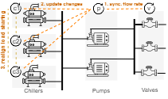

Would rather jump directly to the example? Its here
Looking for the ontologies? They are here
Achieving an orchestrated operation of electro-mechanical components of a system is the concern of almost every automation engineer in domains such as chemical processing, factory automation, and building systems
Whether the process is continuous or discrete, or the automation architecture centralized or distributed, planning the coordination of the components is inevitably based on (1) the understanding of the underlying physical process and (2) the the control startegy that manages the component's operation. This counters the common impression that coordinattion is only a proper synchronization of amongst local controls of each component. Moreover, coordination is engineered to accomplish goals and conform to constraints that are specified at the system-level.
Therefore engineering of coordination in automation systems requires access to system knowledge. It includes system requirements (which specifies the process goals), technical system design (which tells about components and topology), models of physical processes (which tell how the components influence the physical state), and the description of the control strategy for managing the component's physical mechanisms.
But engineering of coordination by embeding the logic in the automation programs is not only laborious and error-prone task but requires reeingineering when requirements or system features change. Our research seeks to find out if the automation agents can autonomously determine the need for coordination, set up collaboraton, and interact with other agents towards fulfilling the system goal.
We have been working out how autonomous agents which have access to machine-understandable knowledge of the system can figure things out by themselves. First we created an high-level ontology called Elementary that can bridge concepts in system requirements, design, physical process models, and control program description. Elementary enabled our agents to autonomously select local control strategies. But coordination is different - it is about working out interactions between agents so that the inter-dependencies in the physical processes are satisfied.
Consider the part of a chilled water refrigeration plant shown in the figure below. Based on the cooling demand in the three zones, the valves are opened to increase or decrease the flow. The pumps have to respond correspondingly, but before they do that, they need to inform the chillers so that the compressor loadings are realigned before hand. Sometimes such sequences are handled as purely local reaction controls (e.g., the modulation of a valve will cause back pressure change, based on which the pump speed is varied), but for large and complex systems relying on physical feedbacks may either be not possible or may be too slow. Therefore the automation agents responsible for the subsystems need to coordinate.
We are exploring the following stream of ideas: (1) let the agents determine the coordination needs. We are calling this "agents knowing their coordination responsibilities"", (2) they search for agents with which they need to collaborate (we dont assume that they know this beforehand), and (3) when they find each other, they "setup the interactions" autonomously. We dont claim that we have solved this in its entirity, but we do have the interesting pieces in place.
In short the pieces are (1) semantic inference of coordination responsibilities from the integrated system knowledge, (2) use the architectural principles and technologies behind hypermedia environments to allow the agents to discover collaborators, and finally (3) embed knowledge of physics in to interaction protocols (we are calling this coordination protocol). We have tried to put these all in to a single figure:

The pieces are especially interesting because we can show them working, in which case it is more convincing to see some examples
We will use the scenario of the chilled water refrigeration system as an running example.
TD
Elementary is the ontology that contains high-level concepts. It is here
PhyDiT is a more specialized ontology (which uses Elementary) to make it possible to automatically infer match between a technical system and a control program. It is here.
CoordOnt is an extension of Elementary which contains concepts to describe coordination protocols. It is here
An easy way to play with Hypermedia environments is to use Yggdrasil.